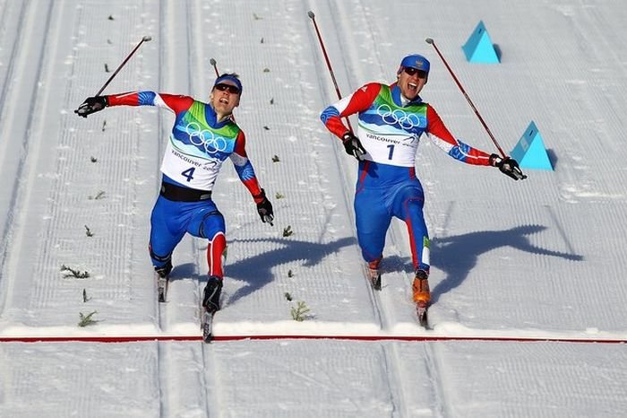

Лыжные гонки
Наскальные рисунки в Скандинавии и России рассказывают нам о том, что за много тысяч лет до нашей эры народы, живущие там, использовали лыжи для передвижений по снегу. Поэтому любовь к занятиям лыжными гонками у жителей северных стран, к коим мы с вами тоже частично относимся, заложена на генетическом уровне. В Скандинавском, например, люди даже поклонялись покровителям лыж – богу Улльру и богине Скаде.
Первые состязания в беге на скорость состоялись в далеком 1767 году в Норвегии. Но активное распространение лыжные гонки как вид спорта получили на рубеже XIX-XX веков, когда повсеместно стали создаваться лыжные клубы и национальные федерации во многих странах. Впервые соревнования по лыжным гонкам среди мужчин были представлены уже на I зимних Олимпийских играх во французском Шамони, а среди женщин – лишь в 1952 году в Осло (Норвегия).
Россиянки всегда поддерживали славные традиции лыжных гонок в нашей стране в разное время: Любовь Егорова (6 золотых олимпийских медалей), легендарная Лариса Лазутина (5 золотых олимпийских медалей), Галина Кулакова и Раиса Сметанина (по 4 золотых медали Олимпийских игр). За всю историю Олимпийского движения 42 советских и российских спортсмена добивались успеха в лыжных гонках.
Основными стилями передвижения на лыжах являются классический, когда практически всю дистанцию лыжник проходит по предварительно подготовленной лыжне, состоящей из двух параллельных колей, и свободный (коньковый), при котором лыжник сам выбирает способ передвижения по дистанции. Коньковый стиль превосходит классический по скорости.
На Олимпиадах лыжники разыгрывают между собой 12 комплектов наград. Представляем вашему вниманию основные виды лыжных гонок:
1. Свободный стиль (15 км мужчины, 10 км женщины) – лыжники уезжают на трассу с интервалом в 30 секунд. Победу одерживает тот, кто затратит на ее прохождение меньшее количество времени.
2. Пасьют – первую часть трассы лыжники проходят классическим стилем, а вторую половину – свободным. Скорость смены лыж при этом напрямую влияет на итоговый результат (15 км + 15 км мужчины, 7,5 км + 7,5 км женщины).
3. Эстафета 4х10 км у мужчин и 4х5 км у женщин – команды из 4-х лыжников пробегают четыре этапа (1-ый и 2-ой – классическим стилем, а 3-ий и 4-ый – свободным).
4. Командный спринт – эстафета команд, состоящих из 2-х лыжников, которые по три раза каждый проезжают по 1,5 км. Побеждает команда, которая быстрее всех достигнет финиша после шести этапов. Один из самых зрелищных видов лыжных гонок.
5. Классический стиль (спринт) – стартовав с интервалом в 15 секунд, лыжники пробегают 1.4-1.6 км (мужчины) или 1.2-1.3 км (женщины). Первые 30 проходят в следующий круг. В четвертьфинале, полуфинале и финале стартуют по шесть человек, дальше проходят двое первых и двое среди тех, кто занял 3-4 места. В финале также остаются шестеро спортсменов, между которыми разыгрываются медали.
6. Свободный стиль (масс-старт) – самая длинная спортивная дисциплина лыжных гонок на зимних Олимпийских играх. Спортсмены уходят со старта одновременно (50 км у мужчин и 30 км у женщин).
Весь мир будет пристально следить за соревнованиями лыжных гонщиков на Олимпийских зимних играх в Сочи. Надежды России связаны с чемпионом прошлых игр в Ванкувере в личном спринте классическим стилем Никитой Крюковым. Тем более что наш российский лыжник показывает потрясающие результаты в предолимпийском сезоне – два золота на чемпионате мира в Валь-ди-Фьемме говорят о готовности Крюкова к борьбе за самые высокие позиции на домашних играх.
Не будем забывать и про Александра Панжинского, серебряного призера Ванкувера в личном спринте классическим стилем, который наверняка захочет реабилитироваться за прошлые игры и добыть золото домашней Олимпиады, и про Александра Легкова, желающего, наконец, завоевать олимпийскую награду.
{kind=link}
{kind=link}
{kind=link}
{kind=link}